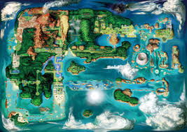

Hoenn venne creata dopo la nascita di Groudon e Kyogre. Nelle loro forme primordiali, Groudon sollevò la terraferma e Kyogre riempì i mari di quella che sarebbe poi divenuta Hoenn. Tra i due Pokémon iniziò poi una battaglia per la supremazia, che proseguì fino all'intervento provvidenziale di Rayquaza, il quale inviò Groudon nella Grotta Terra e Kyogre nella Grotta Mare.
Successivamente, Regigigas creò Hoenn, spostando le terre emerse create da Groudon con delle funi. Usando argilla, ghiaccio e ferro, il Pokémon creò i tre golem leggendari Regirock, Regice e Registeel. Dopodiché Regigigas cadde in letargo e venne sigillato nel Tempio di Nevepoli a Sinnoh, durante l'età del ferro. Stessa sorte fu riservata alle sue tre creazioni, dopo essere state venerate per anni come divinità dagli umani. Regirock venne sigillato nelle Rovine Sabbiose, Regice nella Grotta Insulare e Registeel nella Tomba Antica ad Hoenn. I tre Pokémon rappresentano le chiavi per il risveglio del loro creatore.
Queste testimonianze sono state ritrovate all'interno della Sala Incisa durante gli eventi della terza e della sesta generazione.
Hoenn possiede sedici città e villaggi ed una propria Lega Pokémon. Siccome la maggior parte di esse sono immerse nella natura, non ci sono città paragonabili ad Austropoli o Luminopoli, ma il maggiore centro è rappresentato da Porto AlghepoliRZS/CiclamipoliRΩZα.
La regione di Hoenn ha 34 percorsi differenti, che consentono agli Allenatori di spostarsi da una zona all'altra agevolmente. Proprio come Sinnoh in seguito, i percorsi sono numerati in maniera differente in modo da non costituire una sequenza diretta con quelli delle precedenti regioni. Essi sono numerati da 101 a 134. Se paragonata con le altre regioni note, Hoenn presenta un'abbondanza di percorsi acquatici. Ciò da l'impressione che la regione sia metà acqua e metà terra, in riferimento alla battaglia fra Groudon e Kyogre.
La regione è unica e famosa per gli ambienti tropicali. Essa non presenta nemmeno una catena montuosa effettiva, contrariamente a Sinnoh e altre regioni. Hoenn ha introdotto molti nuovi ambienti naturali, quali: un vulcano, una giungla, spiagge, un deserto e foreste pluviali. Hoenn ha inoltre introdotto l'idea dei percorsi con clima differente, inclusi pioggia costante, tempeste, cenere vulcanica cadente e raggi di sole.
In Rubino e Zaffiro l'intera popolazione della regione di Hoenn è di 598 persone, mentre in Rubino Omega e Zaffiro Alpha è di 694 persone.
In questa sezione, esploreremo la storia di Hoenn e il suo ruolo nell'universo Pokémon, raccontando le origini, i conflitti e le scoperte che hanno influenzato la regione e la vita degli allenatori. Un viaggio che ci porterà a conoscere Pokémon leggendari, scienziati visionari e battaglie epiche.